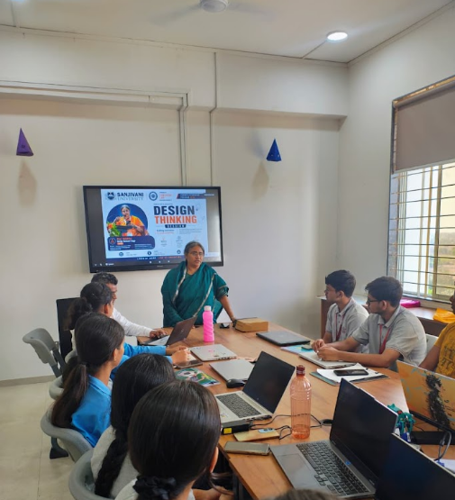
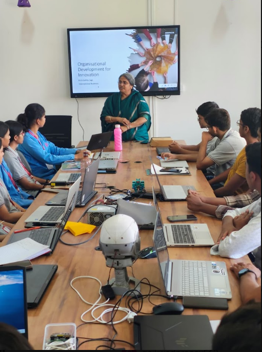
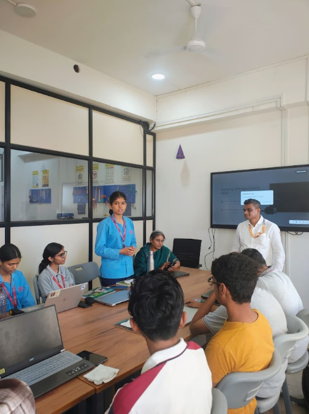

As part of our summer internship program focused on modern manufacturing technologies such as 3D Printing, Laser Cutting, Electronics, and Digital Fabrication, we attended an informative session on Design Thinking conducted by Girija Kumari Sagi Ma'am, one of the most experienced faculty members in our college.
The session was unique because instead of directly discussing technical concepts, she explained the fundamentals of design thinking through simple real‑life examples and everyday situations. This helped us understand how innovative solutions can be developed by observing problems around us.


Design Thinking is a problem‑solving approach that focuses on understanding the needs of users and creating practical solutions. It encourages creativity, observation, experimentation, and continuous improvement.
Instead of immediately building a product, Design Thinking helps us first understand:
Ma'am explained that innovation begins with observation. Many successful products are created by carefully observing people's daily activities and identifying difficulties they face.
Example: Difficulty in organizing study materials on a desk can lead to the design of a customized desk organizer.
Before designing any product, we must understand the needs and expectations of the users. A product becomes successful only when it solves a real problem.
After identifying a problem, different ideas should be generated without worrying about whether they are perfect. Brainstorming helps in finding multiple possible solutions.
A simple model or prototype can be created to test an idea. Technologies like 3D Printing and Laser Cutting are useful tools for quickly creating prototypes.
Once a prototype is developed, it should be tested by users. Feedback helps in improving the design and making it more effective.
The session included several simple and relatable examples from daily life, such as:
These examples helped us understand that innovation does not always require complex technology; it often begins with identifying small everyday problems.
The concepts of Design Thinking are highly relevant to the technologies we are learning during our internship:
Design Thinking serves as the foundation that guides the development of products using these technologies.

The Design Thinking session conducted by Girija Kumari Sagi Ma'am was highly informative and engaging. Through simple daily‑life examples, she demonstrated how innovative ideas originate from understanding real‑world problems. The session helped us realize that successful products are created not only through technology but also through empathy, observation, creativity, and continuous improvement. The knowledge gained from this session will be valuable while working on future projects involving 3D Printing, Laser Cutting, Electronics, and product design.